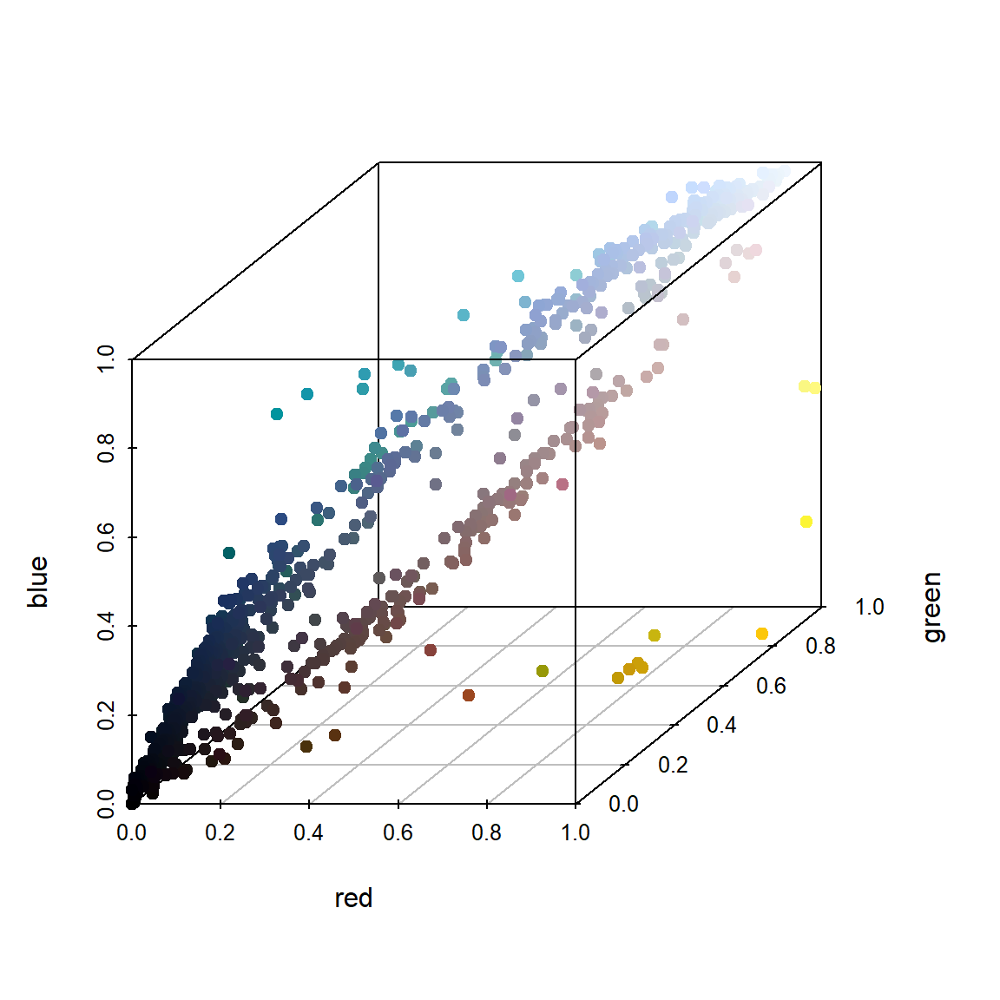

Chapter 1 R and RStudio
1.1 Installing R and RStudio
The first step is to download and install R and RStudio. Most steps should be self-explanatory. You can also find many online guides for step-by-step instruction, such as this YouTube video. However, be aware that some details may have been changed over the years.
After installing both, open your RStudio, you should see four panes, which can be seen below:
- Source pane on top-left where you write code in to files
- Console on bottom-left where the code is inputted into R
- Environment (and other tabs) on top-right where you can see current variables and objects you defined
- File (and other tabs) on bottom-right which is essentially a file borrower

We will mainly use the left two panes. You can either directly input code into the console to run for results, or edit your code in a file and run them in chunks or as a whole.
1.2 Resources and Guides
There are many online resources for how to use R, RStudio. For example, David Dalpiaz’s other online book Applied Statistics with R contains an introduction to using them. There are also other online documentation such as
It is worth to mention that once you become an advanced user, and possibly a developer of R packages using C/C++ (add-on of R for performing specific tasks), and you also happen to use Windows like I do, you will have to install Rtools that contains the gcc compilers. This is also needed if you want to install any R package from a “source” (.tar.gz) file instead of using the so-called “binaries” (.zip files).
1.3 Basic Mathematical Operations
Basic R calculations and operations should be self-explanatory. Try to type-in the following commands into your R console and start to explore yourself. Lines with a # in the front are comments, which will not be executed. Lines with ## in the front are outputs you should expect.
# Basic mathematical operations
1 + 3
## [1] 4
1 - 3
## [1] -2
1 * 3
## [1] 3
1 / 3
## [1] 0.3333333
3^5
## [1] 243
4^(-1/2)
## [1] 0.5
pi
## [1] 3.141593
# some math functions
sqrt(4)
## [1] 2
exp(1)
## [1] 2.718282
log(3)
## [1] 1.098612
log2(16)
## [1] 4
log(15, base = 3)
## [1] 2.464974
factorial(5)
## [1] 120
sin(pi)
## [1] 1.224606e-16If you want to see more information about a particular function or operator in R, the easiest way is to get the reference document. Put a question mark in front of a function name:
1.4 Data Objects
Data objects can be a complicated topic for people who never used R before. The most common data objects are vector, matrix, list, and data.frame. They are defined using a specific syntax. To define a vector, we use c followed by (), where the elements within the parenthesis are separated using comma. You can save the vector and name as something else. For example
# creating a vector
c(1,2,3,4)
## [1] 1 2 3 4
c("a", "b", "c")
## [1] "a" "b" "c"
# define a new vector object, called `x`
x = c(1,1,1,0,0,0)After defining this object x, it should also appear on your top-right environment pane. To access elements in an object, we use the [] operator, like a C programming reference style.
# getting the second element in x
x[2]
## [1] 1
# getting the second to the fourth element in x
x[2:4]
## [1] 1 1 0Similarly, we can create and access elements in a matrix:
# create a matrix by providing all of its elements
# the elements are filled to the matrix by column
matrix(c(1,2,3,4), 2, 2)
## [,1] [,2]
## [1,] 1 3
## [2,] 2 4
# create a matrix by column-bind vectors
y = c(1,0,1,0,1,0)
cbind(x, y)
## x y
## [1,] 1 1
## [2,] 1 0
## [3,] 1 1
## [4,] 0 0
## [5,] 0 1
## [6,] 0 0
# access elements in a matrix
# Note that in R, upper and lower cases are treated as two different objects
X = matrix(c(1:16), 4, 4)
X
## [,1] [,2] [,3] [,4]
## [1,] 1 5 9 13
## [2,] 2 6 10 14
## [3,] 3 7 11 15
## [4,] 4 8 12 16
X[2, 3]
## [1] 10
X[1, ]
## [1] 1 5 9 13
# getting a sub-matrix of X
X[1:2, 3:4]
## [,1] [,2]
## [1,] 9 13
## [2,] 10 14Mathematical operations on vectors and matrices are, by default, element-wise. For matrix multiplications, you should use %*%.
# adding two vectors
(x + y)^2
## [1] 4 1 4 0 1 0
# getting the length of a vector
length(x)
## [1] 6
# matrix multiplication
X %*% X
## [,1] [,2] [,3] [,4]
## [1,] 90 202 314 426
## [2,] 100 228 356 484
## [3,] 110 254 398 542
## [4,] 120 280 440 600
# getting the dimension of a matrix
dim(X)
## [1] 4 4
# A warning will be issued when R detects something wrong
# Results may still be produced however
y + c(1,2,3,4)
## Warning in y + c(1, 2, 3, 4): longer object length is not a multiple of shorter object length
## [1] 2 2 4 4 2 2list() creates a list of objects (of any type). However, some operators cannot be directly applied to a list in a similar way as to vectors or matrices. Model fitting results in R are usually stored as a list. For example, the lm() function, which will be introduced later.
# creating a list
x = list(c(1,2), "hello", matrix(c(1,2,3,4), 2, 2))
# accessing its elements using double brackets `[[]]`
x[[1]]
## [1] 1 2data.frame() creates a list of vectors of equal length, and display them as a matrix-like object, in which each vector is a column of the matrix. It is mainly used for storing data. This will be our most frequently used data object for analysis. For example, in the famous iris data, the first four columns are numerical variables, while the last column is a categorical variable with three levels: setosa, versicolor, and virginica:
# The iris data is included with base R, so we can use them directly
# This will create a copy of the data into your environment
data(iris)
# the head function peeks the first several rows of the dataset
head(iris, n = 3)
## Sepal.Length Sepal.Width Petal.Length Petal.Width Species
## 1 5.1 3.5 1.4 0.2 setosa
## 2 4.9 3.0 1.4 0.2 setosa
## 3 4.7 3.2 1.3 0.2 setosa
# each column usually contains a column (variable) name
colnames(iris)
## [1] "Sepal.Length" "Sepal.Width" "Petal.Length" "Petal.Width" "Species"
# data frame can be called by each individual column, which will be a vector
# iris$Species
iris$Species[2:4]
## [1] setosa setosa setosa
## Levels: setosa versicolor virginica
# the summary function can be used to view summary statistics of all variables
summary(iris)
## Sepal.Length Sepal.Width Petal.Length Petal.Width Species
## Min. :4.300 Min. :2.000 Min. :1.000 Min. :0.100 setosa :50
## 1st Qu.:5.100 1st Qu.:2.800 1st Qu.:1.600 1st Qu.:0.300 versicolor:50
## Median :5.800 Median :3.000 Median :4.350 Median :1.300 virginica :50
## Mean :5.843 Mean :3.057 Mean :3.758 Mean :1.199
## 3rd Qu.:6.400 3rd Qu.:3.300 3rd Qu.:5.100 3rd Qu.:1.800
## Max. :7.900 Max. :4.400 Max. :6.900 Max. :2.500factor is a special type of vector. It is frequently used to store a categorical variable with more than two categories. The last column of the iris data is a factor. You need to be a little bit careful when dealing with factor variables when during modeling since some functions do not take care of them automatically or they do it in a different way than you thought. For example, changing a factor variable into numerical ones will ignore any potential relationship among different categories.
levels(iris$Species)
## [1] "setosa" "versicolor" "virginica"
as.numeric(iris$Species)
## [1] 1 1 1 1 1 1 1 1 1 1 1 1 1 1 1 1 1 1 1 1 1 1 1 1 1 1 1 1 1 1 1 1 1 1 1 1 1 1 1 1 1 1 1 1 1 1 1 1 1 1 2 2 2 2 2 2 2 2 2 2 2 2 2 2 2 2 2 2 2 2 2 2 2 2 2 2 2 2 2 2 2 2 2 2 2 2 2 2 2 2 2 2 2 2 2 2 2 2 2 2 3 3 3 3 3 3 3 3 3 3 3 3 3 3 3 3 3 3 3 3 3 3 3 3 3 3 3 3 3 3 3 3 3 3 3 3 3 3 3 3 3 3 3 3 3 3 3 3 3 31.5 Readin and save data
Data can be imported from a variety of sources. More commonly, a dataset can be stored in .txt and .csv files. Such data reading methods require specific structures in the source file: the first row should contain column names, and there should be equal number of elements in each row. Hence you should always check your file before reading them in.
# read-in data
birthrate = read.csv("data/birthrate.csv")
head(birthrate)
## Year Birthrate
## 1 1917 183.1
## 2 1918 183.9
## 3 1919 163.1
## 4 1920 179.5
## 5 1921 181.4
## 6 1922 173.4
# to see how many observations (rows) and variables (columns) in a dataset
dim(birthrate)
## [1] 87 2R data can also be saved into other formats. The more efficient way, assuming that you are going to load these file back to R in the future, is to save them as .RData file. Usually, for a larger dataset, this reduces the time spend on reading the data.
# saving a object to .RData file
save(birthrate, file = "mydata.RData")
# you can specify multiple objects to be saved into the same file
save(birthrate, iris, file = "mydata.RData")
# load the data again back to your environment
load("mydata.RData")
# alternatively, you can also save data to a .csv file
write.csv(birthrate, file = "mydata.csv")
# you can notice that this .csv file contains an extra column of "ID number", without a column name
# Hence, when you read this file back into R, you should specify `row.names = 1` to indicate that.
# Otherwise this will produce an error
read.csv(file = "mydata.csv", row.names = 1)1.6 Using and defining functions
We have already used many functions. You can also define your own functions, and even build them into packages (more on this later) for other people to use. This is the main advantage of R. For example, let’s consider writing a function that returns the minimum and maximum of a vector. Suppose we already know the min() and max() functions.
1.7 Distribution and random numbers
Three distributions that are most frequently used in this course are Bernoulli, Gaussian (normal), and \(t\) distributions. Bernoulli distributions can be used to describe binary variables, while Gaussian distribution is often used to describe continuous ones. The following code generates some random variables
# read the documentation of rbinom() using ?rbinom
x = rbinom(100, 1, 0.4)
table(x)
## x
## 0 1
## 62 38However, this result cannot be replicated by others, since the next time we run this code, the random numbers will be different. Hence it is important to set and keep the random seed when a random algorithm is involved. The following code will always generate the same result
set.seed(1)
x = rbinom(100, 1, 0.4)
y = rnorm(100) # by default, this is mean 0 and variance 1
table(x)
## x
## 0 1
## 57 43
hist(y)

1.8 Using packages and other resources
Packages are written and contributed to R by individuals. They provide additional features (functions or data) that serve particular needs. For example, the ggplot2 package is developed by the RStudio team that provides nice features to plot data. We will have more examples of this later on, but first, let’s install and load the package so that we can use these features. More details will be provided in the data visualization section.
# to load the package
library(ggplot2)
# use the ggplot() function to produce a plot
# Sepal.Length is the horizontal axis
# Sepal.Width is the vertical axis
# Species labels are used as color
ggplot(iris, aes(Sepal.Length, Sepal.Width, colour = Species)) +
geom_point() 
You may also noticed that in our previous examples, all tables only displayed the first several rows. One may be interested in looking at the entire dataset, however, it would take too much space to display the whole table. Here is a package that would allow you to display it in a compact window. It also provides searching and sorting tools. You can integrate this into your R Markdown reports.
Often times, you may want to perform a new task and you don’t know what function can be used to achieve that. Google Search or Stack Overflow are probably your best friends. I used to encounter this problem: I have a list of objects, and each of them is a vector. I then need to extract the first element of all these vectors. However, doing this using a for-loop can be slow, and I am also interested in a cleaner code. So I found this post, which provided a simple answer:
1.9 Practice questions
- Attach a new numerical column to the
irisdata, as the product ofPetal.LengthandPetal.Widthand name the column asPetal.Prod.
- Attach a new numerical column to the
irisdata, with value 1 if the observation issetosa, 2 forversicolorand 3 forvirginica, and name the column asSpecies.Num.
- Change
Species.Numto a factor variable such that it takes value “Type1” if the observation issetosaand “NA” otherwise.
- Define a function that takes in a numerical vector, and output the mean of that vector. Do this without using the
mean()andsum()function.